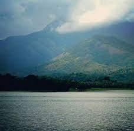
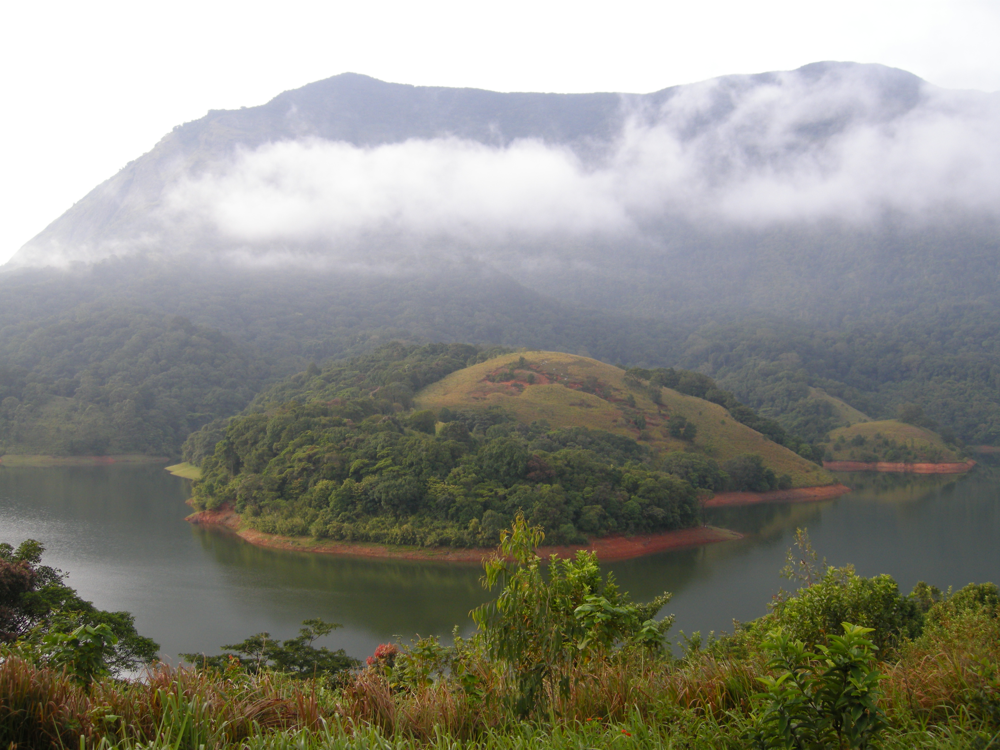

Nelliyampathy
This is a small but very beautiful hill station near Palakkad


YOU MUST VISIT Nelliyampathy atleast Once in your life Time.
From the town of Nenmara in Palakkad district, the cloud-caressed peaks of the majestic Nelliyampathy Hill ranges are a sight to behold. The height of the hills ranges from 467 m to 1,572 m and it has an extremely calming effect on all who view it. To reach Nelliyampathy, one has to take the road starting from Nenmara that proceeds to the Pothundy Dam. There are about 10 hairpin bends that have to be negotiated on the way to Nelliyampathy. The Pothundy Dam is a beautiful locale with facilities for boating and is a nice option as a picnic place. As the Ghat road winds its way up to Nelliyampathy, at certain places there are viewpoints from where the vast stretches of Palakkad district are visible with its extensive paddy fields forming a verdant carpet. It also offers a splendid view of the Palakkad Gap, which is a geographical phenomenon in the Western Ghats formation in this region, bringing into view, parts of the adjoining State of Tamil Nadu. On the way up, those interested in bio farming can take a close look at the privately managed farms and also vast expanses of tea estates managed by different plantation companies. The hills of Nelliyampathy are also well known for their orange cultivation. Privately owned hotels and resorts are located at various points, as one goes up the hills of Nelliyampathy. The bio-farms located here are a major landmark as one proceeds up before reaching the topmost point at Palagapandi Estate. The estate has a quaint bungalow, built during the British rule in India, and has now been converted into a privately owned resort. At Kaikatty, a community hall is available, which is usually used as a base by those interested in trekking.
Parambikkulam
Tiger Reserve


Kerala is not only the home country of God but also the home of natural tourist sites and places. Kerala is world-famous for its beaches and backwaters; there is a network of canals. It is a state which inhabits many wildlife sanctuaries, national parks, and tiger reserves. Parambikulam Tiger Reserve is one of the 104 tiger reserves of India and has 28 tigers as per the last census and is virtually a paradise of amazing sights. Romance, wildlife, or adventure holidays - the Parambikulam forest won’t let you down. Parambilkulam wildlife sanctuary which was established in 1973 in the Sugan Range of Hills, Kerala, and Sanctuary provides a home to four different tribes, and are Kadar, Malasar, Muduvar, and Mala Malasar which are settled in six colonies. These tribal communities work as guides for the treks and safaris for the tourists, and they are provided with employment inside the Tiger Reserve Parambikulam Tiger Reserve is a well-protected ecological paradise which is located in the landscape of Nelliampathy - Anamala of the Southern Western Ghats in India. Its exact location is in the Palakkad District of Kerala. It is one of the biodiversity hot spots in the world that supports diverse habitat types and endemism. The biological richness and abundance of flora and fauna and panoramic beauty make Parambikulam Tiger Reserve is one of the most exciting and appealing places in the entire stretch of Western Ghats. It was announced as the Tiger Reserve in 2009 by the Government of India. Parambikulam Forest is a highly protected ecological spot of the Anamalai sub unit of Western Ghats, surrounded by protected areas and sanctuaries of Kerala and Tamil Nadu. It is the shelter home ground for indigenous people from four tribes who are an integral part of the comprehensive harmonious ecosystem. The rich habitat of the sanctuary with an ample amount of water supply makes it an optimal abode for flora and fauna. Nature lovers can have the time of their life in the lap of mother nature.
Kava
Kava an Island

Kava is a scenic region surrounded by hills covered in dense
forestation with a serene lake. The picturesque site is a treat to
nature lovers who visit often for nature walks and treks. The chirping
birds, the cool fresh air and the lush greenery make the experience of
exploring the attraction an enchanting one.
Malampuzha
A UNESCO World Heritage Site!
Malampuzha Garden in Palakkad district is the only rock-cut garden in South India made by Nek Chand, the renowned artist and winner of the prestigious Padmashree Award. The entire garden is made from broken pieces of bangles, tiles, used plastic cans, tins and other waste materials. Also situated in the gardens is the massive Malampuzha Yakshi (female vampire) built in 1969 by Kanayi Kunhiraman, a greatly respected sculptor from the state. It is a spectacular relic of art that we are lucky to still have with us. The flowering beds, fountains and rose gardens along with an aerial ropeway make it a place that instantly soothes your soul. In the lower hills of the Western Ghats lies the beautiful Malampuzha township whose lush greenery and plethora of picnic spots make it a must-visit spot in these areas. It has really good trekking trails that are available to all with a penchant for the same. Malampuzha Gardens and the Irrigation Dam tend to be the areas that attract the highest number of visitors. Apart from being perfect picnic spots, there is a host of interesting trivia surrounding the place that adds to its appeal.
Attapadi
Reserve Forest

While most parts of the Silent Valley are raw, wild, and devoid of human intervention, Attapadi Reserve Forest has remained a protected zone. The extensive mountain valley sits at an elevation of 2460 feet, at the foothills of the Nilgiris in the Palakkad district of Kerala. The sprawling area of the almost 250 sq. km. near the headwaters of the Bhavani River, encloses dense shola forests, the Palakkad plains, beautiful streams, and exotic wildlife. The highlight of the forest is the gigantic mountain peak of Malleswaram, which rises to almost 5460 feet from the center of the valley, flanked by the Bhavani River and the Attapadi village. One of the less-explored forests of Kerala, Attappadi defines the life of the locals and offers plenty to its visitors. The woods also home to the local ethnic tribes like the Muduga, Irula, and Kurumba, who inhabit the far edges around the mountains.
Palakkad Fort
Tipu's Fort


Tipu's Fort, also known as Palakkad Fort, is a beautifully maintained edifice in Palakkad district and was an important military base in the past. Rebuilt by Hyder Ali in the 18th century, the fort was under the Mysore rulers until the British took control of the place. It was then used for providing government services during the British era. Named after Hyder's son Tipu Sultan, it is an important historical destination today. It is among the best preserved forts in South India. The thick laterite walls impress all who view it. People frequent the spot for relaxing walks and jogs. A large ground that lies between the Fort and the Palakkad town hall is an important location for public meetings and important functions. Today it is a protected monument under the Archaeological Survey of India. It is a preferred picnic spot for everyone visiting Palakkad.
Fantasy Park
First amusement Park in kerala
Fantasy Park is a premier amusement park in the southern state of Kerala. With the Western Ghats as its backdrop, the fun-filled park is a paradise for leisure and rejuvenation. Spread over an area of 17 acres, the Fantasy Park boasts of more than 35 rides in its dry area and water theme park, as well as a planetarium that provides an out of the world experience for the kids. The park is particularly well-known due its proximity to the Malampuzha Gardens and Malampuzha Dam. Initially established in 1996 as a dry theme park, Fantasy Park has been expanded and developed over the years to accommodate water rides and other extra amenities. It is operated under the auspices of Neo Tech Amusements and Resorts Pvt. Ltd., who took the initiative to launch the first of such an amusement park in Kerala. The park also went on to receive recognition with the Most Innovative Tourism Award of Kerala for the year 1997-98. Today, it continues to be reasonably well-maintained, with courteous staff and added facilities. Fantasy Park makes for an ideal day trip for families, especially those with young kids. You may also choose to come here with a group of friends for a relaxing day, with a pinch of adrenaline. During summer, the water theme park acts as a cool-off against the heat. This amusement park is the perfect destination for a day of fun as well as relaxation, and is suitable for all ages.
The User can book various essentials such as food,Rooms and transport
after login.
Travel is the only thing you buy that makes you richer.
When you eat food with your family and friends, it always tastes
better!
You could get various traditional food and order accordingly.
Through this you can get the best Rooms to stay Palakkad at the best
Price.
Contact
For enquire
Siruvani Reservoir

Siruvani dam is a dam in Palakkad District, Kerala located 46 km away from Palakkad town. This dam constructed across the Siruvani River, is for supplying drinking water to the city of Coimbatore in Tamil Nadu. The dam is surrounded by reserve forests. Muthikulam hill is situated on the eastern side of the dam. There is a natural waterfall in the hill. The waterfalls and the Dam are big tourist attractions. The famous 150-year-old Pattiyar Bungalow is on the banks of the Siruvani Reservoir. An agreement was executed in August 1973 between the state Governments for drinking water supply to Coimbatore town and neighbouring areas from the Siruvani Dam. The location being in the state of Kerala, the project was executed by the Kerala Public Works Department using the funds made available by the Tamil Nadu Government